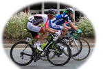
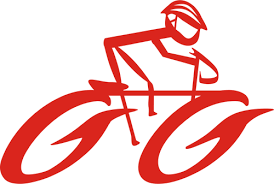

O ciclismo

Ciclismo é um esporte de corrida de bicicletas cujo objetivo dos participantes é chegar primeiro a determinada meta ou cumprir determinado percurso no menor tempo possível.

Foi na Inglaterra, em meados do século XIX, que o ciclismo iniciou-se como esporte, época em que o aperfeiçoamento do veículo possibilitou o alcance de maiores velocidades. O ciclismo é regido por diversas regras. Geralmente enquadra-se em quatro categorias: provas em estradas, provas em pistas, provas de montanha (Mountain Bike ou MTB) e BMX e é praticado com diversos tipos e modelos de bicicletas.
Aonde comprar sua bike?